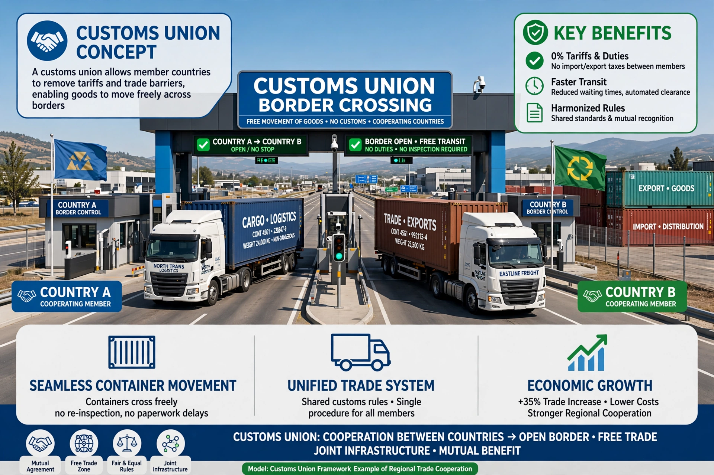

| Customs union | |
|---|---|
 | |
| Definition | Free trade area plus common external tariff |
| Examples | EU Customs Union; Zollverein (1834); Mercosur; EAEU; SACU |
| Integration stage | Third stage (after preferential and free trade areas) |
A customs union is a form of economic integration between countries in which the members (1) abolish tariffs and quotas on trade among themselves, as in a free trade area, and (2) adopt a common external tariff on imports from non-members, usually administered through a common trade policy. It is the third stage in the classic taxonomy of economic integration (after preferential trading areas and free trade areas, and before common markets, economic unions and political union). Unlike a free trade area, a customs union makes "rules of origin" checks at internal borders unnecessary, since goods entering any member have already paid the common tariff; unlike a common market, it does not by itself allow free movement of labour and capital.
The most famous historical customs union is the German Zollverein of 1834, which united most German states under a Prussian-led tariff system and is widely seen as a precursor of German political unification in 1871. The European Union Customs Union, completed in 1968, is the largest modern example: the EU's member states apply a common customs code and external tariff and negotiate trade agreements collectively (the EU–Turkey customs union extends a partial version to Turkey). Other examples include the Southern African Customs Union (SACU, dating to 1910 — among the world's oldest), the Eurasian Economic Union, Mercosur in South America (an "imperfect" customs union with many exceptions), the Gulf Cooperation Council's customs union, and the East African Community customs union.
Following Jacob Viner's The Customs Union Issue (1950), economists evaluate customs unions by the balance of trade creation (shifting consumption from high-cost domestic producers to lower-cost partner producers — welfare-improving) against trade diversion (shifting imports from the cheapest world supplier to a partner only because of the tariff preference — potentially welfare-reducing). Customs unions are permitted under GATT Article XXIV of the WTO as an exception to most-favoured-nation treatment, provided they cover "substantially all trade" and do not on balance raise barriers against outsiders. In the Brexit debate, the distinction between a customs union and a free trade area became politically central, because goods-only customs unions (as sought in various proposals) allow frictionless goods borders without free movement of people.
See also: Bilateral investment treaty · European Union